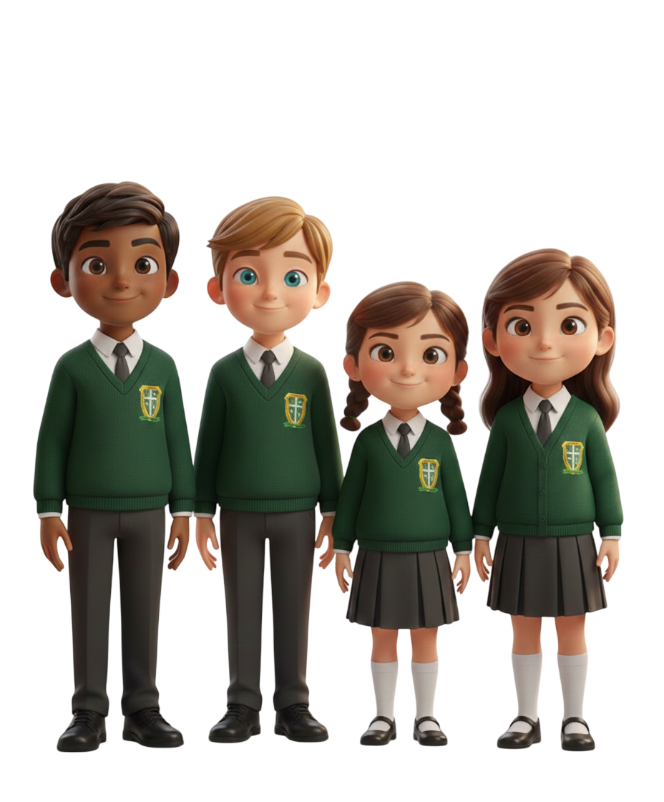

Somos una institución educativa comprometida con la formación integral de niños y jóvenes, con más de 26 años de experiencia formando generaciones en valores, conocimiento y sentido humano. En el Colegio Gabriel García Márquez nos destacamos por ser un colegio técnico en sistemas y programación, brindando a nuestros estudiantes herramientas clave para enfrentar los retos del mundo actual. Nuestra propuesta educativa se complementa con una sólida formación musical y cultural, que fortalece la sensibilidad, la creatividad y la expresión artística, contribuyendo al desarrollo equilibrado de nuestros estudiantes. Trabajamos de manera articulada entre docentes, directivos y familias para garantizar procesos educativos de calidad, promoviendo el pensamiento crítico, el uso responsable de la tecnología y el crecimiento personal. Nuestro compromiso es formar ciudadanos íntegros, autónomos y comprometidos con una cultura de paz y bien, capaces de aportar positivamente a la sociedad.
El COLEGIO GABRIEL GARCÍA MÁRQUEZ es un Colegio de iniciativa privada, mixto, que desarrolla y presta servicios académicos integrados, de excelente calidad, cuyo objetivo es la formación educativa y humana de niños y jóvenes; fundamentado en los valores religiosos, éticos, morales, tecnológicos, inclusivos, sociales y ambientales; afirma su identidad a través de la permanente innovación pedagógica, la investigación científica, las humanidades, el deporte, las habilidades artísticas, la tecnología, la resolución de problemas, el inglés como segunda lengua y la confluencia de cinco principios básicos: Amor, servicio, fraternidad, efectividad, mejoramiento continuo y oración. Todo lo anterior, desde el enfoque de formación ciudadana y una perspectiva del desarrollo humano que respeta la diversidad y las diferencias.
VISIÓN Para el 2026 EL COLEGIO GABRIEL GARCÍA MÀRQUEZ desea consolidarse como una Institución de alta calidad Educativa, que se caracteriza por educar en el amor por la vida, la justicia, la paz, la libertad, el servicio a los demás (especialmente las personas más desprotegidas), la atención a la diversidad, e enfoque técnico en sistemas y por la protección y preservación del medio ambiente. Todo lo anterior conllevará a la renovación y actualización del currículo, donde aspectos relevantes para la institución como: la espiritualidad, el bilingüismo, la inclusión y formación ciudadana, la alta calidad académica, la tecnología, lo ético y moral, desarrollados desde una política interna de gestión de calidad, harán la diferencia, consiguiendo, como efecto, el posicionamiento del colegio, a nivel regional y nacional, y el reconocimiento del mismo, en todo el sector educativo y social, como una de las instituciones educativas más exitosas.
